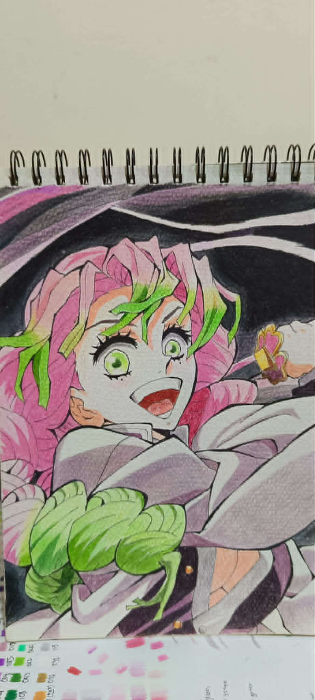
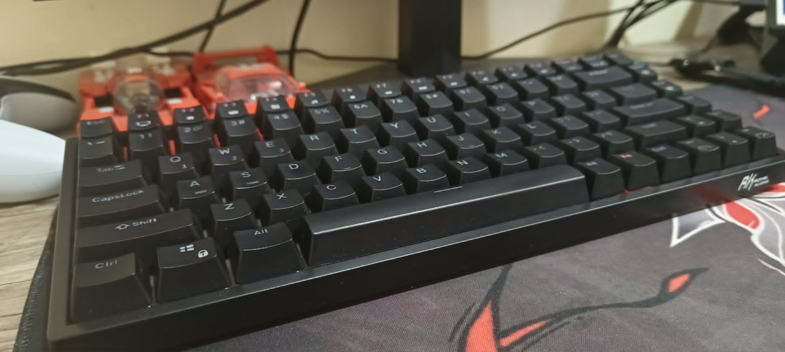
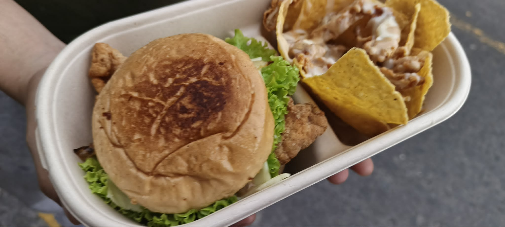

MitsuriKanroji
This is a personal project I did, it's a drawing from my favorite anime Demon Slayer, and the character is Mitsuri Kanroji
welcome to Gerick's portfolio
Welcome to my portfolio. This just shows my knowledge in how to make a simple portfolio webpage : D

I am Gerick Andrei M. Salalima, a first year college student at FEU Tech, currently taking Animation and Game Development
I am a simple person, I like cars, kpop, anime, gaming, and a little cooking on the side.
My favorite games are: Ghost of Tsushima, God of War, and Claire Obscure: Expedition 33.
Here are some of my personal and school projects that I have done.

This is a personal project I did, it's a drawing from my favorite anime Demon Slayer, and the character is Mitsuri Kanroji

While it may look like a stock keyboard, I have made that budget mechanical keyboard into a project build. I've switched out the switches, inserted some foam and modified the pcb.

This was a school project, in grade 12 we did an entrepreneur class in which we had to sell a product, we come up with Snack Shore a chicken sandwich type business in which netted us 30k Php in sales.
Elementary - National Teacher's College
High School - Blessed Sacrament Catholic School
SHS - STEM - Nazareth School of National University
College — BSIT AGD - FEU Tech
no professional experience as of now.